"Размещение базы НАТО в Ульяновске соответствует национальным интересам России."

Так же:
Пропаганда
1. Крым всегда был российский
В 1945 году был издан Указ «О преобразовании Крымской АССР в Крымскую область в составе РСФСР».
Согласно Конституции СССР от 1936 года (статья 18) территория союзных республик не может быть изменяема без их согласия.
5 февраля 1954 года Президиум Верховного Совета РСФСР Постановил «Передать Крымскую область из состава РСФСР в состав Украинской ССР». 13 февраля 1954 года Президиум Верховного Совета УССР Постановил «Просить Президиум Верховного Совета СССР о передачи Крыма в состав УССР». На основании данного Постановления был издан Указ Президиума Верховного Совета СССР от 19 февраля 1954 о передаче Крымской области из состава РСФСР в состав УССР. 26 апреля 1954 года Верховным Советом СССР (высший законодательный орган СССР) был издан соответствующий Закон, который утвердил данный Указ.
Предпосылки к этой передаче были задолго до передачи. Они имели огромное влияние на жизни людей на территории Крыма и были следующего характера:
⎯социальные – близость территории и свободный доступ к ней обеспечивал легкость во взаимоотношениях между людьми и формирование сильных культурных и социальных связей;
⎯ экономические – торговля всегда зависит от тех территориальных и политических связей, которые имеются;
⎯ географические – Крым – это полуостров, соединённый только с одной стороны с сушей, именно этот участок земли принадлежал УССР.
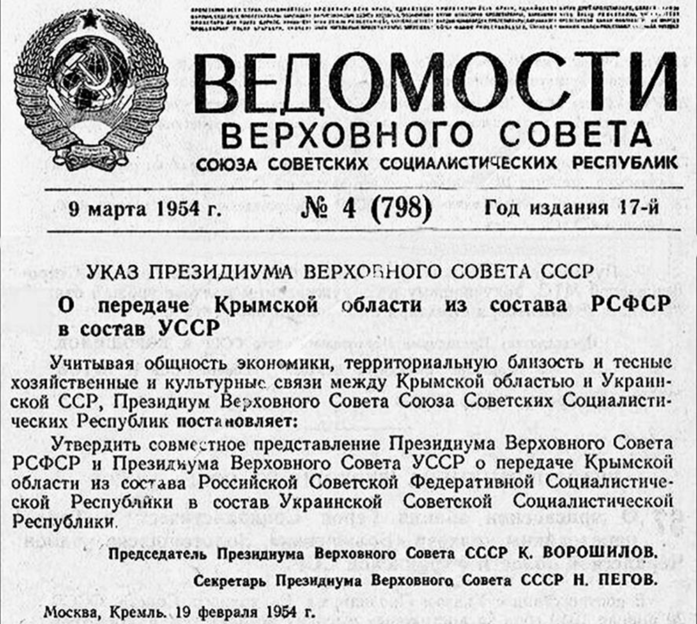
В 1991 году Верховный Совет России постановил в одностороннем порядке, что город Севастополь является частью Российской Федерации, однако на Совете Безопасности ООН было решено, что город Севастополь – это Украина (источник 1, 2).
До 2014 года в риторике властей Российской Федерации ни разу не поднимался вопрос о незаконности Указа о передаче Крыма или фактов о том, что Крым является спорной территорией. В интервью Путин В.В. лично об этом говорит.
Согласно Конституции Крыма (статья 1, пункт 1) Автономная Республика Крым является неотъемлемой составной частью Украины.
Согласно Конституции СССР 1977 года (статья 71) в состав СССР входила Украинская Советская Социалистическая Республика. Отдельно необходимо отметить, что Крым не являлся автономной республикой. Он был обычной областью. Об этом говорит статья 85 Конституции СССР 1977 года, а также Конституция УССР 1978 года (статья 77).
Краткая история Крыма в период нашей эры.
| No п/п | Принадлежность | Период | Количество лет |
|---|---|---|---|
| 1 | Оккупирован РФ | 2014-2023 | 9 |
| 2 | Украина | 1991-2014 | 23 |
| 3 | УССР | 1954-1991 | 37 |
| 4 | РСФСР (СССР) | 1917-1954 | 37 |
| 5 | Российская Империя | 1783-1917 | 134 |
| 6 | Османская империя | 1475-1783 | 308 |
| 7 | Крымское Ханство | 1441-1475 | 34 |
| 8 | Монгольская империя Золотая орда | 1239-1441 | 102 |
| 9 | Крым Половский | 1019-1239 | 220 |
| 10 | Тмутараканское княжество | 988-1019 | 32 |
| 11 | Печенежское царство | 882-988 | 106 |
| 12 | Хазарский каганат | 717-882 | 165 |
| 13 | Византийская империя | 400-717 | 317 |
| 14 | Гуннская империя | 375-400 | 25 |
| 15 | Королевство остготов | 250-375 | 125 |
| 16 | Римская империя | 63 до н.э. – 250 н.э. | 313 |
Ниже приведена инфографика для наглядной демонстрации того, сколько лет Крым находился в составе тех или иных государств.
| Государство | Срок |
|---|---|
| Украина (УССР, Независимая Украина) | 60 лет |
| РФ (Оккупация, СССР, Российская империя) | 180 лет |
| Другие | 1747 лет |
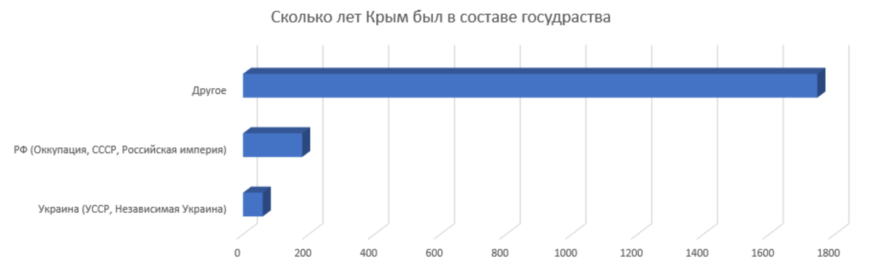
2. «Крым хотел» в Российскую Федерацию
2.1 Политическая составляющая
На всеукраинском референдуме от 1 декабря 1991 года 54,19% из проголосовавших жителей Крыма поддержали независимость Украины.
В бюллетене голосования (который был оформлен на украинском языке) был абзац, в котором прямо говорилось о том, что территория Украины есть неделима и неприкосновенна. Крым это поддержал.
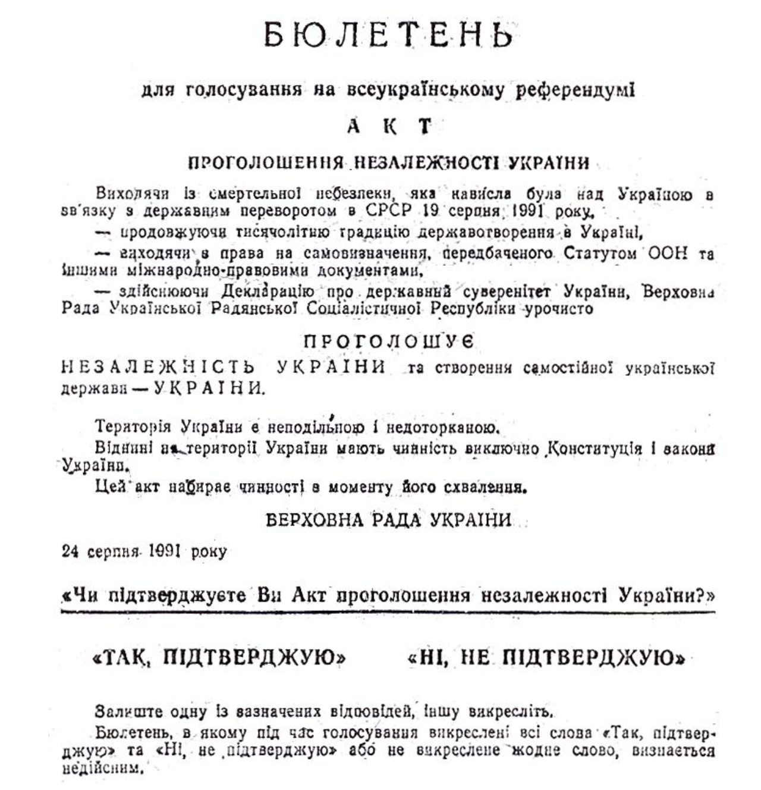
Ярким отражением желаний граждан является наличие тех или иных партий в парламенте и общественных движений.
Партий, которые выступали за какое-либо сотрудничество с Российской Федерацией, было две. Партия «Русский блок» и партия «Русское единство».
За интеграцию с Россией выступала основанная в 2008 году партия «РУССКОЕ ЕДИНСТВО». Её председателем был Аксёнов Сергей Валерьевич. Предвыборная программа была следующая:
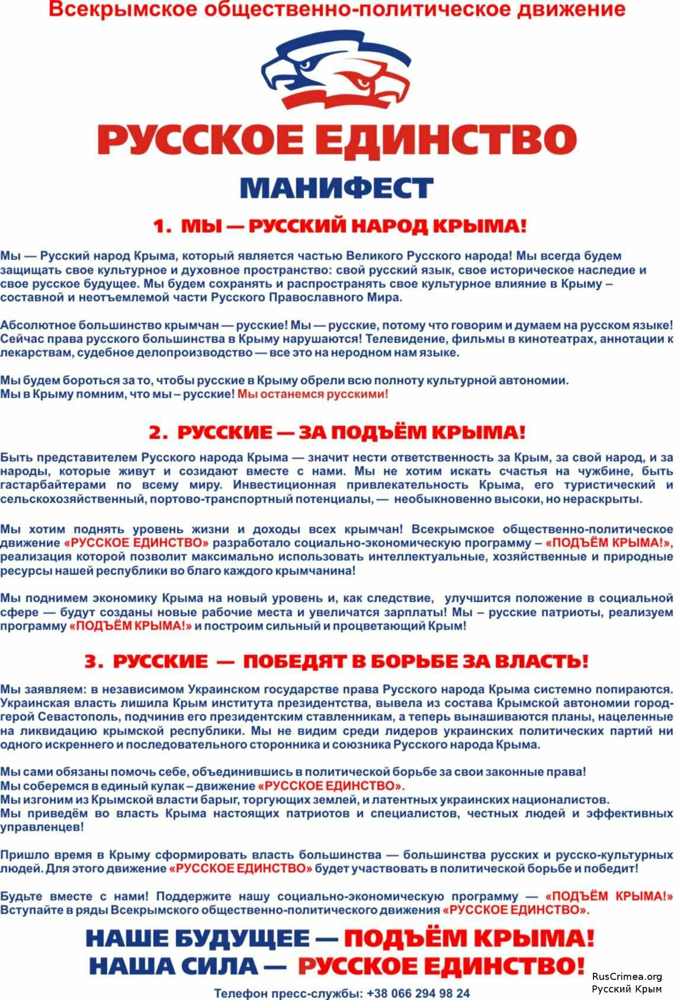
На выборах в 2010 году данная партия набрала 4,02% голосов.
30 апреля 2014 года решением Окружного административного суда города Киев была запрещена деятельность политической партии «Русское Единство».
Отдельно необходимо отметить, что в тех же выборах 1-е место заняла Партия регионов, которая набрала 48,93% голосов. В своей программе Партия регионов предлагала Евроинтеграцию.
За сотрудничество с Россией выступала основанная в 2002 году партия «Русский блок». Её председателем был Свистунов Александр Григорьевич. Предвыборная программа была следующая:
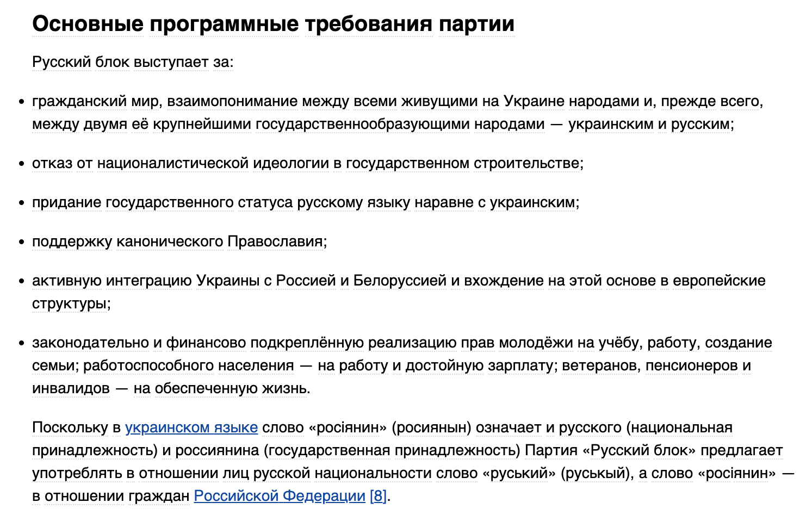
На парламентских выборах 2012-го партия «Русский блок» набрала 0,31% и не прошла в Раду. Больше всего партию поддерживали в Крыму, где «Русский блок» набрал 1,2%.
17 июня 2014 года решением Апелляционного суда Киева партия «Русский блок» была запрещена.
Отдельно необходимо отметить, что в тех же выборах 1-е место заняла Партия регионов, которая набрала 30,00% голосов. В своей программе Партия регионов предлагала Евроинтеграцию.
Данные показатели ярко отражают желание жителей Крыма быть частью «русского мира».
Если в самом деле поверить тому, что жители Крыма действительно хотели как-либо связать свою жизнь с Россией (сотрудничать, как предлагал «Русский блок» или интегрироваться с РФ, как предлагала партия «Русское единство»), становится непонятно, почему они не поддерживали данные партии на различных голосованиях на местом уровне и в голосовании на вхождение в Верховную Раду Украины? Оставим этот вопрос открытым.
2.2 История коренного народа Крыма
На территории Крыма коренным народом являются крымские татары (Украина это признаёт соответствующим Законом, Россия – не признаёт).
В 1944 году Государственный Комитет Обороны СССР Постановил «Всех татар выселить...». В 1946 году на основании этого постановления был издан соответствующий Закон который запустил процесс депортации крымских татар с территории Крыма. Причинами этого называли то, что «многие крымские татары по наущению немецких агентов вступали в организованные немцами добровольческие отряды и вместе с немецкими войсками вели вооруженную борьбу против частей Красной Армии, а также по указке немцев создавали диверсионные банды для борьбы с советской властью в тылу, причем основная масса населения Крымской АССР не оказывала противодействия этим предателям Родины».
На основании Указа о лишении Крыма статуса автономии и полной депортации коренного народа с территории можно констатировать о прекращении существования автономии.
Возвращение крымских татар началось в 1990 году на основании Постановления Министров СССР от 11 июля 1990 года No666. В 1991 году было официальное признание данных действий как геноцид.
В 1991 году Украина восстановила соответствующим Законом статус автономии для Крыма.
2.3 Отношение к людям, которые не поддержали «присоединение»
После аннексии Крыма Россией началась охота на тех, кто не поддержал данные события. В ходе поиска тех, кто будет заниматься подрывной деятельностью РФ ловила как отдельных людей, так и закрывала целые организации.
Так, в 2016 году был запрещён Меджлис крымскотатарского народа. Организацию признали экстремистской и запретили её деятельность на территории России.
Украина признала это действие геноцидом.
Генеральная Ассамблея ООН неоднократно принимала резолюции, в которых констатировались факты арестов и другой незаконной деятельности по отношению к татарам и другим не лояльным к оккупации меньшинствам.
В 2018 году Генассамблеей ООН была принята резолюция в которой выражали серьезную озабоченность по поводу решения так называемого Верховного суда Крыма от 26 апреля 2016 года и решения Верховного суда Российской Федерации от 29 сентября 2016 года объявить Меджлис крымско- татарского народа, являющийся органом самоуправления крымских татар, экстремистской организацией и запретить его деятельность.
В 2021 году Генассамблеей ООН была принята резолюция в которой перечислялись конкретные нарушения прав человека и этнических меньшинств на территории оккупированного Крыма.
3. Про Одессу
3.1 Дом Профсоюзов (сожгли людей)
Для глубокого анализа событий рекомендуется к прочтению книга «2 мая. Мифы и пропаганда» Владимира Саркисяна, а также просмотр видео. Краткий пересказ произошедшего с акцентом на ключевых событиях представлен далее в тексте.
Во время «Майдана» в Киеве подобные протестные акции проходили на территории всей страны. Люди по всей стране выступали ЗА или ПРОТИВ решений действующих властей, что приводило к различным стычкам, однако без каких-либо серьёзных происшествий. Одесса не была исключением.
В отличие от протестов на Майдане, где столкновения в основном происходили между протестующими и милицией или «титушками», столкновения в Одессе произошли между людьми с разными политическими взглядами (сторонники Украины и сторонники «русского мира») на будущее Украины после смены правительства в результате протестов на Майдане. Сторонники разных мнений спокойно двигались (митинговали) по разным улицам и не пересекались. Люди, поддерживающие Украину, обозначали себя с помощью украинских флагов, сторонники «русского мира» обозначали себя красными повязками и георгиевскими лентами.
В отличие от протестов на Майдане, в Одессе милиция была пассивной и не обеспечивала безопасность участников протестов.
На 2 мая 2014 года был запланирован футбольный матч между «Черноморцем» (Одесса) и «Металлистом» (Харьков).
В отличие от всех предыдущих дней, именно 2 мая лидер пророссийского движения Сергей Долженков решил пересечь маршрут движения проукраинского митинга. Причины данного решения до сих пор не определены. Это было очень опасное решение, так как проукраинских митингующих было гораздо больше.
На пересечении улиц Греческая и Дерибасовская митингующие с разными взглядами встретились, и началось столкновение. В результате этого погибло 2 человека. Погибшие были сторонниками Украины, они погибли от огнестрельных ранений. Это были Игорь Иванов и Андрей Бирюков.
В последствии пророссийские активисты были оттеснены в переулок и их начала защищать милиция в связи с тем, что их было меньше. На имеющихся видеозаписях видно, как милиция защищает пророссийских активистов, а из-за их спин ведётся стрельба.
Имеется много видеозаписей, на которых видна стрельба пророссийских активистов по сторонникам Украины.
В дальнейшем пророссийские активисты снова отступили из-за малого количества сторонников. В этот раз из переулка они ушли в Дом профсоюзов.
Примерно в 19:30 в здании вспыхивает пожар. Источник пожара, на данный момент, установить не удалось. В данном контексте нужно понимать, что у пророссийских активистов с собой было как огнестрельное оружие, так и коктейли Молотова, что видно на видеозаписях.
После того как здание было забаррикадировано, пророссийские активисты начали кидать коктейли Молотова с крыши и взрыв пакеты из окон, на что в ответ проукраинский активист открыл ответный огонь (на видеозаписи имеются кадры 18+) из травматического оружия. Об этом он рассказал в интервью.
После непродолжительного конфликта здание наполнилось дымом, люди там находиться уже не могли. Началась суматоха, люди направились к окнам, в которых искали спасение. Часть людей начала выпрыгивать, часть (находящиеся на нижних этажах) смогли выбраться и спуститься по строительным лесам. На видео видно, как люди ставят строительные леса для спасения пророссийских активистов из горящего здания.
В ходе всех столкновений погибло 48 человек и 250 получили ранения. 6 человек погибло от огнестрельных ран, 8 – в результате падения с высоты, 34 – от ожогов и отравления угарным газом.
Отдельно нужно отметить, что были единичные инциденты с нанесением (кадры 18+) телесных повреждений людям, которые выпрыгивали из окон. Кто именно это совершал – установлено не было.
В Одессе 2 мая объявлен траур по погибшим.
В связи с произошедшими событиями 2 мая 2014 года был проведен ряд расследований.
Необходимо отметить отдельный инцидент, являющийся одним из факторов, приведших к большому количеству погибших. В этот день, 2 мая 2014 года, пожарные машины прибыли на пожар лишь спустя полчаса с момента поступления первого звонка в часть о разгорающемся пожаре. Начальник охраны Боделан Владимир Русланович не давал приказ для выезда бригад пожарной охраны на тушение пожара. В 2016 году на него было заведено уголовное дело, а в 2017 году он заочно задержан. На данный момент он скрывается от правоохранительных органов Украины на территории РФ и является чиновником местного уровня на территории оккупированного Крыма.
Одним из факторов пассивности милиции во время этих беспорядков является то, что заместителем начальника Главного управления МВД Украины в Одесской области был Фучеджи Дмитрий Васильевич. Гражданин Российской Федерации.
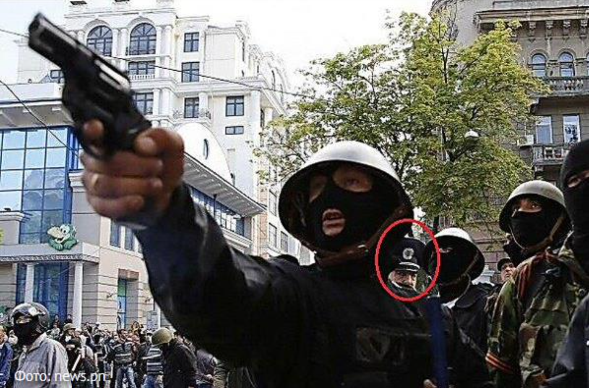
Во время событий 2 мая 2014 года Фучеджи Д.В. лично был в центре Одессы, где происходили массовые беспорядки. Очевидцы утверждают, что правоохранители под руководством Фучеджи Д.В. не пытались предотвратить столкновения между сторонниками Евромайдана и Антимайдана. На глазах правоохранителей некоторые участники столкновений использовали огнестрельное оружие, но милиция не реагировала. Камеры запечатлели момент, где Фучеджи Д.В. стоял за спиной антимайдановца, вооружённого револьвером и не предпринял никаких попыток остановить его.
На данный момент на Фучеджи Д. В. заведено уголовное дело, и он объявлен в розыск. По данным ГБР Украины, он скрывается на территории Российской Федерации.
В 2017 году дал интервью на российском телеканале НТВ, где рассказал свою версию событий, произошедших 2 мая 2014 года.
Еще один интересный момент в этой истории – это то, что бывший Министр МВД Украины Захарченко Виталий Юрьевич тоже находится в розыске СБУ. В настоящее время находится под санкциями США и скрывается на территории Российской Федерации. Активно выступал за антимайдан. В январе Захарченко В.Ю. сообщил о получении им российского гражданства. С 2015 года является сотрудником российской государственной корпорации «Ростех».
3.2 Екатерина II основала Одессу
В 14-ом веке на территории современной Одессы было основано поселение под названием Хаджибей. На тот период времени данные земли принадлежали Великому княжеству Литовскому. В Конце 15 века поселение перешло под контроль Крымского ханства вассала Османской империи и было заселено турками. Во время Русско-турецкой войны данные земли были захвачены Российской империей.
В 1794 году Екатериной II был написан Рескрипт де Рибасу с формулировкой «Учитывая выгодное положение Гаджибея при Черном море и сопряженные с оным пользы, признали Мы нужным устроить тамо военную гавань, купно с купеческой пристанью», который многие трактуют как «основать Одессу».
В 1795 году город был переименован из Хаджибея в Одессу в честь существовавшей недалеко от Одесского залива греческой колонии Одиссос.
4. НАТО – угроза
Согласно заявлениям НАТО по состоянию на 27.10.2010, Североатлантический альянс декларировал своей основной задачей борьбу с терроризмом. В решении данной проблемы удалось объединить экспертов и инженеров из НАТО, стран-партнеров и РФ для сотрудничества в целом ряде мероприятий, включая практические проекты, нацеленные на получение конкретных результатов.
До полномасштабного вторжения России на территорию Украины одной из задач перед НАТО стояла борьба с глобальным потеплением, о чём организация неоднократно сообщала на своём сайте.
В 2012 году на территории России в г. Ульяновск была база для переброски сил НАТО. Президент России Путин В.В. комментировал это следующим образом:

Сотрудничество между НАТО и Россией было постоянным по многим вопросам. Одной из самых известных программ НАТО, в которых принимала участие Россия, была «Партнёрство во имя мира». Больше о партнёрстве НАТО и России можно прочитать здесь.
Российская пропаганда постоянно использует в своей риторике следующее утверждение: «Между РФ и НАТО была договорённость о нерасширении НАТО на восток». Данное утверждение ни разу не было подтверждено (документально) ни представителями пропаганды, ни руководителями России.
В интервью Горбачёв М.С. лично говорил, что утверждение о том, что была договорённость о нерасширении НАТО – миф.
У России имеется второй по количеству вооружения ядерный арсенал в мире, а также все возможные способы доставки этого вооружения. Нападение на РФ будет самоубийством.
В данном разделе нужно отразить то, как отреагировал Президент РФ на сначала заявления Швеции и Финляндии, а потом и вступление Финляндии в НАТО. В своём интервью Путин В.В. заявил следующее: «У нас нет ничего, что могло бы нас беспокоить с точки зрения членства Финляндии или Швеции в НАТО. Ну хочется им – пожалуйста». Протяжённость сухопутной границы между РФ и Финляндией составляет 1300 километров. Протяжённость сухопутной границы между Украиной и РФ составляет 1973 км.
Официальный ответ НАТО на российскую пропаганду можно почитать здесь.
5. Нацизм, фашизм (национализм) в Украине
5.1 Общее
В публичном дискурсе РФ постоянно звучат слова о том, что в Украине есть фашисты/нацисты. В этом контексте сразу нужно сказать о законе Украины «Об осуждении коммунистического и национал - социалистического (нацистского) тоталитарных режимов в Украине и запрещении пропаганды их символики» и Статье 436-1 Уголовного кодекса Украины. Имеются уголовные дела по этой статье.
Основными доказательствами присутствия нацистов в Украине со стороны РФ является то, что в Украине есть националистические полк «Азов» и Добровольческий украинский корпус «Правый сектор», а также присвоен статус Героя Украины Бандере Степану Андреевичу. Разберём эти «доказательства».
Националистический полк «Азов» и Добровольческий украинский корпус «Правый сектор» в Украине действительно есть, они входят в состав ВСУ, однако многие путают понятия «националист» и «нацист» (см. определения в разделе «Термины»). Национализм не несёт в себе ничего плохо, а лишь нацелен на развитие своей нации как таковой.
В интервью Президент РФ Путин В.В. называл себя главным националистом России.
2 августа 2022 года Верховный суд России признал полк «Азов» террористической и экстремистской организацией, полностью запретив его деятельность (о какой деятельности идёт речь – непонятно) на территории России.
Ни одна страна в мире не признаёт данные подразделения нацистскими. Символика, используемая данными подразделениями, также не является нацисткой.
Одним из главных аргументов называть Бандеру нацистом является то, что он «сотрудничал» с Гитлером. В данном контексте нужно понимать, в чём именно заключалось «сотрудничество» между ними. Целью Гитлера был полный захват СССР с последующим установлением контроля над ним. Бандера же рассчитывал на то, что поможет Гитлеру захватить СССР, а в качестве награды добьётся независимости Украины. Их интересы кардинально отличались. В ночь на 30 июня 1941 года Бандерой был провозглашён «Акт возрождения Украинского государства». Однако Гитлер пришел в ярость от этого и приказал уничтожить «сговор украинских самостийников». В связи с этим Бандера был арестован и отправлен в концентрационный лагерь Заксенхаузен, где просидел с 1942 по сентябрь 1944 года.
В контексте этих событий Бандеру можно назвать сепаратистом (террористом, так как он не являлся гражданином СССР) по отношению к СССР, но никак не нацистом. По отношению к Украине он действительно является героем, так как отстаивал её интересы.
На Нюрнбергском процессе, где судили главных нацистов, СССР неоднократно пытался добиться признания Бандеры нацистом, однако этого так и не случилось.
В материалах Нюрнбергского процесса упоминания о Бандере имеются. В частности, это документ 014-USSR – секретный циркуляр по айнзацгруппе С-5, датированный 25 ноября 1941 года. В нем констатировалось как достоверно установленный факт, что «движение Бандеры» готовит антинемецкое восстание на оккупированных территориях с целью создания независимого украинского государства. В связи с этим айнзацгруппе предписывалось всех выявленных бандеровцев после тщательного допроса расстреливать, а протоколы допросов немедленно отправлять начальству.
Это доказательство, представленное трибуналу советскими прокурорами, свидетельствует, что бандеровцы были жертвами еще одного преступления нацистов: внесудебных расправ по признаку принадлежности к политической организации.
Бандера Степан Андреевич был удостоен звания Героя Украины приказом от 20.01.2010 г. Президентом Украины Ющенко В.А. Позже суд отозвал данный приказ, сославшись на то, что согласно закону «О государственных наградах Украины» в соответствии с Конституцией Украины устанавливает государственные награды Украины для награждения граждан за личные заслуги перед Украиной. Бандера С.А. был гражданином Австро-Венгрии, Польской Республики, а в дальнейшем стал апатридом (лицом без гражданства).
В интервью Бандера С.А. отвечал на вопрос о том, что такое «украинский национализм» следующим образом:
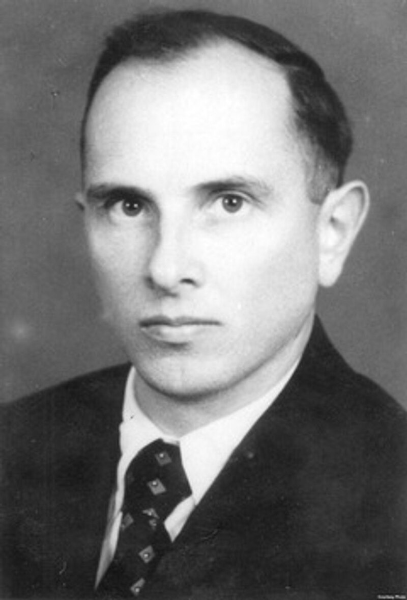
"Український націоналістичний рух не має нічого спільного з нацизмом, фашизмом або націонал-соціялізмом. Український націоналізм бореться проти імперіялізму, проти тоталітаризму, расизму і всякої диктатури чи застосування насильства.
Ім’я “український націоналіст” є співзвучним з “український патріот”".
Ім’я “український націоналіст” є співзвучним з “український патріот”".
Еще одним фактом наличия в Украине нацизма называют Факельные шествия. Данное мероприятие связано с националистическим движением на территории Украины и не несёт в себе ничего плохого.
В ходе мероприятия участники акции держат украинские и красно-черные флаги, портреты проводников национально-освободительной борьбы. Выкрикивают «ОУН-УПА государственное признание», «Путин х@йло», «Слава Украине – Героям слава», «Помни чужак – здесь хозяин украинец».
Во время проведения мероприятия используются следующие символы:
В данном контексте нужно отметить, что ни один из этих символов никем в мире не признан нацистским.
Колонну в ходе мероприятия сопровождает полиция.
Со слов руководителя организации «Азов» Андрея Билецкого, при выборе символа они руководствовались исключительно украинским его содержанием без ссылок на средневековую немецкую геральдику, а тем более – на символику национал-социалистической Германии. Пересечением двух букв I и N символизируют центральный лозунг – «Идея Нации». Буква N имеет в монограмме староукраинское написание (именно так писали ее в древнерусских и козацких документах до реформы правописания времен Петра).
Подобные мероприятия проходили и на территории России вплоть до 2020 года. Называются они «Русский марш» и имеют более радикальный (источник 1, 2, 3 материалы 18+) характер.
В 2007 году украинские официальные лица ездили в Израиль с целью найти досье на Шухевича Р.И., однако оказалось, что данного документа не существует (источник 1, 2).
5.2 Конгресс США признал «Азов» нацистами
Российская пропаганда утверждает, что Конгресс США признал батальон «Азов» нацистами, однако это утверждение является ложью.
11 июня 2015 года Конгресс США утвердил Закон (раздел 10009) в котором рассмотрел «Запрет использования средств, предусмотренных этим законопроектом, для предоставления оружия, обучения или другой помощи батальону «Азов»». По состоянию на 2023-2024 год на батальон «Азов» накладываются те же самые ограничений связанные со снабжением. Это прописано в соответствующем Законе (раздел 8105).
В 2019 году 40 конгрессменов-демократов из Палаты представителей США подписали обращение к Госсекретарю США Майку Помпео, в котором потребовали внести «Азов» и две праворадикальные организации в Европе в список иностранных террористических организаций. Однако это совершено не было, в списке террористических организаций батальон «Азов» отсутствует.
Батальон «Азов» с 2015 года из-за участия в нём нескольких человек с подтвержденными неонацистскими взглядами и использующих когда-то символику неонацизма, внесен Конгрессом США в перечень организаций, которые запрещено снабжать оружием, обучать или предоставлять иную помощь.
Официальный ответ батальона «Азов» можно почитать здесь.
Подробный разбор этой темы можно почитать здесь.
6. Русские всегда побеждают
Данное утверждение и все подобные направлены на эмоциональную составляющую нашей психологии. В мире и истории нет ни одной нации или государства, которое за всё своё время существования не проигрывало в каких-либо войнах (боевых действиях), политических, демографические, экономических или каких-либо еще сферах деятельности.
6.1 Проблемы с демографией
Интересное видео о проблемах демографии в России можно посмотреть здесь.
На данный момент в России наблюдается демографический кризис. Ярко проявился в 2014, усилился в 2019 из-за COVID-19 и продолжился из-за начала полномасштабного вторжения в Украину.
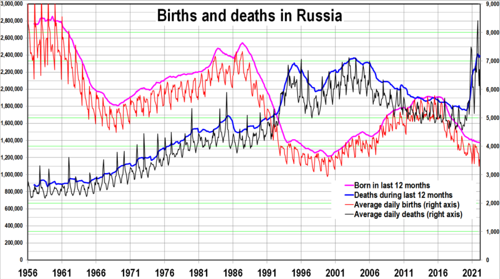
6.2 Военные поражения
Перечень крупных военных конфликтов (войн), в которых Российская Федерация (её предшественники, то есть русские) потерпели поражение в период с 20-го века:
⎯ Советско-финляндская война (на бумаге победа, по факту цели были провалены);
Полный список войн и вооружённых конфликтов России (её предшественников) можно посмотреть здесь. Поражения являются обычным «делом» для постоянно воюющей страны.
6.3 Политические поражения
Политические поражения – на данном этапе войны России против Украины (СВО) явно наблюдается поражение внешней политики властей Российской Федерации. У Российской Федерации нет союзников (Индия и Китай, которых Российская Федерация считает своими союзниками, во время голосования либо поддерживают резолюции против Российской Федерации, либо просто воздерживаются от голосования), постоянно происходит отторжение Российской Федерации от остального мира. Данное поражение отчётливо видно в голосованиях на заседаниях ООН (различных структурах этой организации), ниже приведены некоторые из них:
Резолюция A/ES-11/L.7
Согласно результатам голосования, 141 страна проголосовала «за», 7 «против» и 32 воздержались. Документ призывает РФ остановить боевые действия и вывести свои войска из Украины.
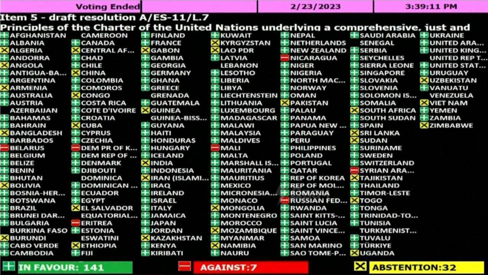
Резолюция A/ES-11/L.5
Генассамблея ООН приняла резолюцию, не признающую референдумы в ДНР, ЛНР, Херсонской и Запорожской областях. «За» проголосовало 143 страны, «против» – 5 и 35 воздержались.

Резолюция A/ES-11/L.4
Генассамблея ООН приняла резолюцию о приостановке участия Российской Федерации в Совете по правам человека. «За» проголосовало 93 страны, «против» – 24 и 58 воздержались.
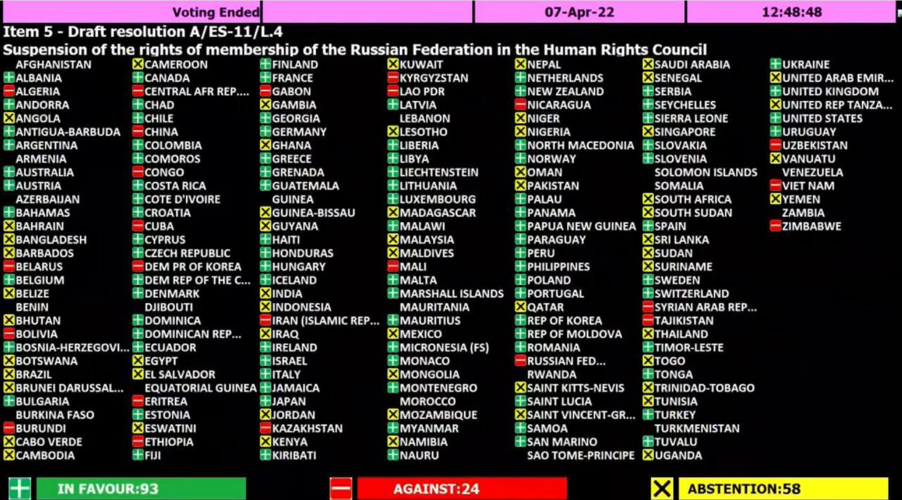
Резолюция A/77/L.65
Генассамблея ООН приняла резолюцию с признанием агрессии Российской Федерацией против Украины, а до этого против Грузии в 2008 году. Китай и Индия проголосовал «ЗА».

6.4 Экономические поражения
На 2021 год Российская Федерация была на 9 месте в Мире по уровню ВВП, что составляет 3,065% от общемирового уровня и сильно отстаёт от первых мест. Однако данный показатель не отражает действительную картину жизни в Российской Федерации.
После вторжения на территорию Украины Российская Федерация стала самой подсанкционной страной в мире. Количество санкций исчисляется тысячами и только увеличивается. Данный показатель очень негативно сказывается на экономике Российской Федерации.
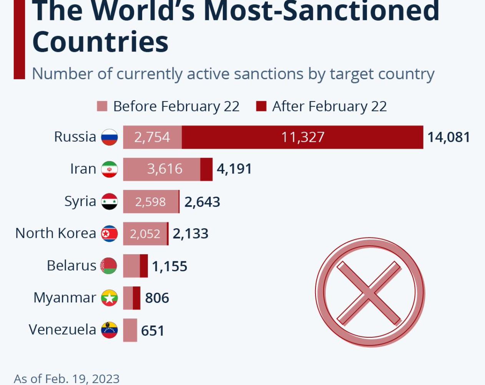
7. Если РФ проиграет – РФ распадётся
Данная фраза, как и «Русские всегда побеждают», – должна задеть наши эмоции и страх перед будущей неизвестностью в случае распада.
Имея исторический опыт, можно с уверенностью говорить о том, что поражение напрямую не приводит к распаду (США – Вьетнам/Афганистан, РФ – Первая чеченская). После вывода войск из других стран граждане, в большинстве своём, поддерживают это решение действующих политиков.
На данном этапе времени на территории РФ отсутствуют какие-либо национальные движения/интересы. Абсолютное отсутствие политической жизни, а в свою очередь и каких-либо лидеров, способных к «расшатыванию» действующей вертикали власти.
8. РФ не хочет войны, РФ мирная страна
За всю свою многовековую историю Россия (её предшественники) совершила огромное количество военных интервенций в другие страны. Не все войны были захватническими, на Россию (её предшественников) также совершали военные интервенции, однако утверждение о том, что «РФ – это мирная страна» – явная ложь.
В современной истории Российской Федерации (от 1991 года) были неоднократные вторжения в другие страны, а также боевые действия на территории самой Российской Федерации, а именно:
⎯ «Первая чеченская война» и «Вторая чеченская война» – военные конфликты на территории РФ за восстановление конституционного порядка в Чеченской республике. Одна из самых лицемерных страниц в истории РФ, так как именно Чеченская республика пыталась отделиться от РФ в связи с националистическими движениями. Такой же повод для выхода из состава Украины РФ приписывает к ДНР и ЛНР, хотя там подобных движений не было. В ходе обеих войн погибло более 100000 гражданского населения. Был полностью разрушен город Грозный;
⎯Молдова (Приднестровский конфликт) – отторжение части территории от государства. В Люксембургской Декларации от 4-8 июля 2019 года в главе 1 пункте 13 на странице 3 призывают Российскую Федерацию к выводу вооруженных сил и запасов боеприпасов России с территории Республики Молдова;
⎯Грузия – «Пятидневная война», в ходе которой от территории Грузии были отторгнуты значительные территории с последующим преобразованием их на непризнанные республики Южная Осетия и Абхазия. В дальнейшем они были признаны РФ как независимые государства. В Берлинской декларации от 7-11 июля 2018 года призывают Россию к выводу войск с территории Грузии (пункт 41 страница 6, резолюций на странице 39);
⎯ Украина – в комментариях не нуждается;
⎯ Сирия – постоянные боевые конфликты.
Отдельно в данном ключе необходимо упомянуть о «ЧВК «Вагнер». Это российское вооружённое формирование, созданное и подконтрольное российскому предпринимателю Евгению Пригожину. В ряде стран имеет статус террористической организации, а также нарушает статьи 208 и 359 УК РФ. Президент России признал, что «ЧВК «Вагнер» спонсировалась государством. Данная «ЧВК» принимала участие в таких военных конфликтах: Война России против Украины, Гражданская война в Сирии, Гражданская война в Центральноафриканской Республике, Гражданская война в Ливии, Конфликт в Южном Кордофане.
Президент РФ Путин В.В. регулярно угрожает применением ядерного оружия (источник 1, 2, 3).
23 ноября 2022 года Россия была признана государством-спонсором терроризма.
Если говорить о правовом поле, то здесь Россия также нарушила много договоров с ЕС:
⎯ в части поставок газа;
⎯ Декларации о недопустимости интервенции и вмешательства во внутренние дела государств;
С Украиной были нарушены следующие договора:
⎯ Договор о статусе и пребывании Черноморского флота в Крыму;
⎯ Договор между Украиной и Российской Федерацией о государственной границе, Приложение 1;
⎯ Договор о дружбе, сотрудничестве и партнерстве между Украиной и Российской Федерацией;
⎯ Будапештский меморандум (согласно «Венская конвенция о праве международных договоров» данный Меморандум является международным договором) (об этом говорится в Бакинской Декларации от 28 июня – 2 июля 2014 года в пункте 3 на стр. 19 и в Люксембургской Декларации от 4-8 июля 2019 года в статье 5 на стр. 38);
⎯ Минские соглашения (раздел 1, раздел 2).
Если смотреть на исторические события – СССР (Россия является официальным правопреемником СССР (решение ООН, письмо, решение совета Глав Государств СНГ, Договор о государственном долге)) является одной из сторон, которая развязала самую масштабную войну в мире – Вторую мировую войну.
В период с 1939 по 1941 годы СССР оккупировал восточные регионы Польши, страны Балтии (Латвия, Литва и Эстония. Видео), часть восточной Финляндии и восточную Румынию (Бессарабию).
Согласно имеющимся документальным подтверждениям (Секретный дополнительный протокол к Договору о ненападении между Германией и СССР), видеоматериалам с парада вермахта перед частями РККА (формирование вооружённых сил, сухопутные войска Вооружённых сил РСФСР) в оккупированном Бресте, а также на основании анализа имеющихся исторических событий можно явно говорить о том, что СССР и в частности Сталин И.В. являлись пособниками и союзниками нацистов.
На фото представлены Гудериан (немецкий военачальник и военный деятель, генерал- полковник вермахта) и Кривошеин (советский военачальник) под военно-морским флагом нацистской Германии в оккупированном в 1939 году городе Брест.
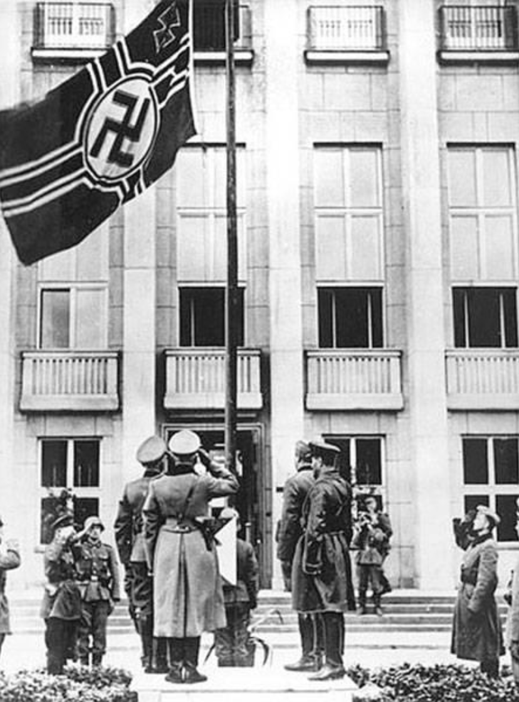
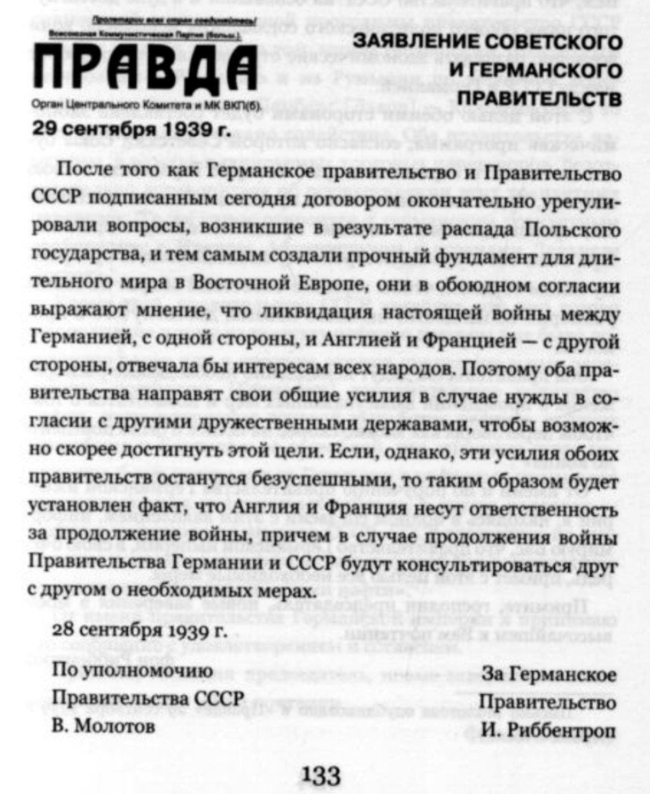
28 сентября 1939 года было выпущено совместное заявление Советского и Германского правительств:
⎯ «установлен факт, что Англия и Франция несут ответственность за продолжение войны»;
⎯ «правительства Германии и СССР будут консультироваться друг с другом о необходимых мерах».
11 февраля 1940 года в Москве состоялось подписание «Хозяйственного соглашения» (к Большому торговому договору от 19 августа 1939 г.) между СССР и Германией. В нём предусматривалось, что Советский Союз за 12 месяцев (то есть до 11 февраля 1941 года) поставит Германии товары на сумму в 420—430 млн германских рейхсмарок.
9. Украина нарушала Минские соглашения
9.1 Разбор утверждения «Украина нарушала Минские соглашения»
В информационном поле РФ постоянно фигурирует тезис о том, что Украина не соблюдала Минские соглашения. В качестве подтверждения своих слов представители РФ выставляют только вырванные фразы украинских политиков и общественных деятелей. Фактических подтверждений данных о нарушениях Минских соглашений со стороны Украины нет.
Одним из подтверждений о невыполнении Минских соглашений Украиной российская сторона приводит слова Ангелы Меркель якобы о том, что их и так никто не собирался выполнять. Однако, в интервью на самом деле она сказала следующее:
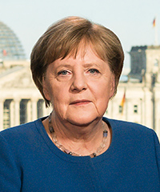
"Минские соглашения 2014 года были попыткой дать время Украине. Она также использовала это время, чтобы стать сильнее, как вы можете видеть сегодня. Украина 2014/15 – это не Украина сегодня."
Если говорить про Минские соглашения с точки зрения Украины – это очень невыгодные соглашения со стороны правового поля и со стороны поддержания демократии в Украине. Данные соглашения подписывались на фоне крупных военных поражений Украины на поле боя в боях с войсками России и коллаборантами за освобождение ОРДЛО (читай раздел «Минские соглашения»). Украина пошла на подписание данных соглашений с целью уменьшения количества жертв как со стороны гражданского населения, так и со стороны военных. Минские соглашения выполнили свою главную задачу – уменьшили количество жертв (читай раздел Инфографика 2014-2021).
После подписания Минских соглашений миссия ОБСЕ неоднократно фиксировала факты нарушения соблюдения Минских договорённостей именно со стороны Российской Федерации. За это на Россию накладывались (продлевались) санкции. Перечень документов (декларации ОБСЕ), в которых указывают на нарушения Минских соглашений со стороны России, можно посмотреть в этом разделе.
Больше информации о том, кто и как нарушал Минские соглашения, можно прочитать здесь.
9.2 Что делала Украина для выполнения Минских соглашений
В данном подпункте приведены некоторые факты, которые подтверждают, что Украина стремилась к мирному урегулированию конфликта на территории Донбасса согласно Комплексу мер по выполнению Минских соглашений, который был подписан 12-го февраля 2015 года (Минские соглашения).
| No пункта | Текст | Что делали для выполнения? |
|---|---|---|
| 1 | Незамедлительное прекращение огня |
Заявление президента Украины «Через считанные минуты прекращаем огонь» В отчёте от 16 февраля Миссия ОБСЕ подтверждает готовность Украины В отчёте от 17 февраля Миссия ОБСЕ подтверждает готовность Украины В отчёте от 18 февраля Миссия ОБСЕ подтверждает готовность Украины. Однако отмечает, что «ДНР и ЛНР не желают этого сделать» В отчёте от 3 марта Миссия ОБСЕ констатирует нарушение со стороны ДНР |
| 2 | Отвод тяжёлых вооружений | Украина отводила вооружения (источник 1, 2, 3, 4, 5) |
| 3 | Обеспечение эффективного мониторинга | Со стороны Украины нарушений зафиксировано не было Со стороны ДНР и ЛНР были нарушения (источник 1, 2, 3) |
| 4 | Диалог о выборах | В Украине издан соответствующий закон 1680-VII |
| 5 | Обеспечение помилования | Принят соответствующий закон No5082 Почитать описание можно здесь |
| 6 | Освобождение и обмен пленных | Обмены были регулярными (источник 1, 2) |
| 7 | Доступ к гуманитарной помощи | Помощь была регулярной (источник 1, 2, 3) |
| 8 | Социальные выплаты | Украина платила пенсии (источник 1, 2) |
| 9 | Восстановление контроля над границей | Украина просила о вводе миротворцев ООН РФ накладывала «вето» на данные резолюции, это было регулярно (источник 1, 2, 3, 4) |
| 10 | Вывод вооружённых формирований | Со стороны Украины были подписаны соответствующие законы (1, 2). Со стороны России – не выполнено |
| 11 | Конституционная реформа | Проведён ряд реформ |
| 12 | Проведение выборов | Для проведения выборов необходимо было восстановить контроль над территорией |
| 13 | Интенсифицировать деятельность группы | Внутренний вопрос взаимодействия контактной группы |
17 февраля 2015 было проведено заседание Совета Безопасности ООН. В ходе обсуждения единогласно была одобрена резолюция, в которой все члены Совета Безопасности поддержали Комплекс мер по выполнению Минских соглашений.
По итогу Российская Федерация так и не выполнила свою часть Комплекса мер по выполнению Минских соглашений.
10. Ущемление русского языка в Украине
С момента принятия первой Конституции Украины (статья 10) и аналогично в нынешней Конституции Украины (статья 10) государственный язык в Украине – украинский язык. В той же статье указано, что в Украине гарантируется свободное развитие, использование и защита русского языка, других языков национальных меньшинств (в этом разделе описываются меньшинства) Украины. Поддержка русского языка и других языков национальных меньшинств также закреплена в Конституции Крыма (статья 10).
10.1 Закон о развитии украинского языка
Аргументом пропаганды о том, что в Украине ущемляется русский язык, есть Закон об обеспечении функционирования украинского языка как государственного, который был принят 25 апреля 2019 года.
Исходя из утверждения, что этот закон ущемляет русский язык, можно сделать вывод о том, что его просто не читали.
Ключевое из него:
Статья 2. Сфера действия Закона
1. Настоящий Закон регулирует функционирование и применение украинского языка как государственного в сферах общественной жизни, определенных настоящим Законом, на всей территории Украины.
2. Действие настоящего Закона не распространяется на сферу частного общения и религиозных обрядов.
3. Порядок применения крымскотатарского языка и других языков коренных народов, национальных меньшинств Украины в соответствующих областях общественной жизни определяется законом о порядке реализации прав коренных народов, национальных меньшинств Украины с учетом особенностей, определенных настоящим Законом.
Статья 3. Задачи Закона
1. Задачами настоящего Закона являются:
1) защита государственного статуса украинского языка;
2) утверждение украинского языка как языка межэтнического общения в Украине;
3) обеспечение функционирования государственного языка как инструмента объединения украинского общества, средства укрепления государственного единства и территориальной целостности Украины, ее независимой государственности и национальной безопасности;
4) обеспечение применения украинского языка как государственного на всей территории Украины в сферах общественной жизни, определенных настоящим Законом, а также в международном общении, при осуществлении должностными лицами представительских функций;
5) обеспечение развития украинского языка для укрепления национальной идентичности, сохранение национальной культуры, традиций, обычаев, исторической памяти и его дальнейшего функционирования как государственно-творческого фактора украинской нации;
6) поддержка украинского языка путем содействия:
а) владению украинским языком гражданами Украины;
б) развитию украинского жестового языка как основного или одного из основных средств общения жестоговорящих лиц. Статус, основы и порядок применения украинского жестового языка определяются законом;
в) применению украинского языка в соответствии с требованиями украинского правописания и других стандартов государственного языка;
г) употреблению вместо иностранных слов, словосочетаний и терминов в случае, если в украинском языке существуют равнозначные соответствия, и повышению уровня осведомленности граждан о них;
ґ) предотвращению вульгаризации украинского языка и смешивания его с другими языками;
д) распространению знаний об украинском языке и его роли в развитии украинской и европейской культур;
е) популяризации диалектов и наречий украинского языка и их сохранению;
э) изучению украинского языка в Украине и за рубежом;
7) распространение украинского языка в мире и содействие в удовлетворении языковых потребностей иностранных украинцев и граждан Украины, проживающих или временно находящихся за пределами Украины.
Если подытожить, то можно сказать, что задача данного закона – продвижение украинского языка на территории Украины и за её пределами.
Нужно различать ситуации, когда говорят об ущемление одного языка, с тем, что начинают продвигать другой. Данная ситуация связана с тем, что Россия использует русский язык в качестве предлога и обоснования военной агрессии против Украины.
10.2 Закон о языке для оккупированных территорий
Для мирной интеграции оккупированных территорий Донецкой и Луганской областей в Украину был принят закон 1680-VII «Об особом порядке местного самоуправления в отдельных районах Донецкой и Луганской областей». Основная его задача заключается в том, чтобы обеспечить местному населению комфортное использование русского языка во всех сферах жизнедеятельности.
Главное из него:
Статья 4. Государство гарантирует в соответствии с Законом Украины "Об основах государственной языковой политики" право языкового самоопределения каждого жителя в отдельных районах Донецкой и Луганской областей относительно языка, который считает родным, выбора языка общения, свободного использования русского и любого другого языка в общественной и частной жизни, изучение и поддержку русского и любого другого языка, их свободного развития и равноправия.
Органы местного самоуправления, местные органы исполнительной власти способом и в пределах полномочий, предусмотренных Законом Украины "Об основах государственной языковой политики", другими законами Украины, международными договорами Украины, согласие на обязательность которых предоставлено Верховной Радой Украины, способствуют в отдельных районах Донецкой и Луганской областей использованию русского и других языков в устной и письменной форме в сфере образования, в медиа и создают возможности для их использования в деятельности органов государственной власти и органов местного самоуправления, в судопроизводстве, в экономической и социальной деятельности, при проведении культурных мероприятий и в других областях общественной жизни.
Данный закон был принят в 2015 году и продлевается каждый год.
10.3 Общее
Необходимо обозначить несколько моментов:
⎯ на территории Украины до сих работают школы, в которых преподают на русском языке;
⎯ на территории России отсутствуют школы, в которых можно получить полное среднее образование на каких-то языках кроме русского;
⎯ не существует инструментов, с помощью которых можно регулировать язык общения в личной жизни граждан.
11. Украина незаконно вышла из состава СССР
11.1 СССР не существует
Мы можем говорить о том, что СССР больше не существует, на основании следующих фактов:
1. Политическое решение:
8 декабря 1991 года Верховный Совет СССР принял решение о прекращении своей деятельности. Это решение официально признало окончание существования СССР и его превращение в Содружество Независимых Государств (СНГ) (оригинал). Изначально в СНГ входили Республика Беларусь, РСФСР и Украина. В тот же день было сделано заявление глав государств Республики Беларусь, РСФСР, Украины о том, что «СНГ является открытым для присоединения всех государств – членов Союза ССР, а также для иных государств, разделяющих цели и принципы настоящего Соглашения». На основании этого заявления, 21 декабря 1991 года была подписана АЛМА-АТИНСКАЯ ДЕКЛАРАЦИЯ в следствии чего к СНГ присоединился еще ряд стран бывшего СССР.
2. Международное признание:
После объявления о прекращении СССР, новые независимые государства, включая Россию, Украину, Беларусь и другие, были признаны международным сообществом в качестве независимых и суверенных государств. Они получили членство в Организации Объединенных Наций и других международных организациях отдельно от СССР.
3. Государственные структуры:
После распада СССР были созданы новые государственные структуры, включая правительства, парламенты, конституции и национальные символы для каждой из бывших советских республик. Они начали разрабатывать и реализовывать свои собственные политические, экономические и социальные системы.
4. Независимость и границы:
В результате распада СССР бывшие республики приобрели независимость и определили свои границы. Между ними были установлены новые границы.
Учитывая эти факты, можно уверенно говорить о том, что СССР больше не существует и его роль в мировой политике и истории была закончена.
11.2 Действия Украины для выхода из состава СССР
Когда речь идет о выходе Украины из состава СССР, следует упомянуть несколько ключевых моментов:
1. Независимость Украины:
17 марта 1991 года был проведён Всесоюзный референдум (он так только назывался. По факту Армения, Грузия, Латвия, Литва, Молдова и Эстония отказались от участия в данном референдуме) о сохранении СССР. В ходе референдума планировалось задавать один вопрос, однако для Украинской ССР дополнительно в бюллетень был включён второй вопрос:
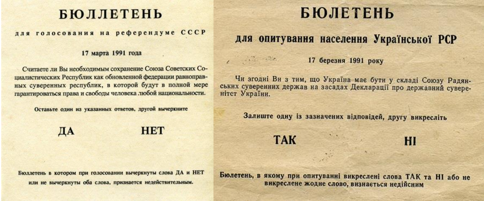
Результаты голосования были следующие: 70,2% ЗА и 80,2% ЗА соответственно.
По итогам референдума власти пришли к выводу, что общественность склоняется к независимости Украины.
24 августа 1991 года Верховная Рада Украинской ССР подписала Акт независимости Украины.
В конце 1991 года Украина провела референдум о независимости, в результате которого подавляющее большинство украинцев проголосовало за создание независимого государства. Референдум состоялся 1 декабря 1991 года. Через несколько дней будет официально объявлено о прекращении существования СССР. Этот референдум стал важным шагом в процессе выхода Украины из состава СССР и утверждении ее независимости.
Право свободного выхода республики из состава СССР прописано в Конституции СССР (статья 72). В Конституции Украинской ССР (статья 69) также прописано право свободного выхода из состава СССР.
Для проведения референдума был издан соответствующий Закон СССР от 03.04.1990 No 1409-I. Данный закон противоречит Конституции СССР (статья 72) и Конституции УССР (статья 69), в которых не прописаны дополнительные требования к выходу Республик из состава СССР.
Ниже приведены ключевые положения из Закона и соответствующие действия Украинской ССР.
| No статьи | Статья кратко: | Что делали: |
|---|---|---|
| 2 | Решение о выходе принимается волеизъявлением народов республики | В голосовании принимали участие граждане УССР |
| Референдум проводится тайным голосованием не ранее чем через шесть и не позднее чем через девять месяцев после принятия решения |
Решение о проведении референдума было принято в августе, что составляет 5 месяц, а не 6, как требуется в статье. Однако в Постановлении ВР говорится следующее «Провозгласить 24 августа 1991 года Украину независимым государством. С момента провозглашения независимости действующими на территории Украины только ее Конституция, законы, постановления Правительства и другие акты законодательства республики». В Постановлении нет прямого указания на данный закон. Считать это нарушением – не корректно. |
|
| 3 | Отдельный референдум в автономии | В Украинской ССР не было автономий. Об этом говорится в Конституции УССР (статья 77) |
| 4 | Образование комиссии | Была образована комиссия |
| 5 | Допуск наблюдателей | Присутствовали наблюдатели |
| 6 | Решение считается принятым, если за него проголосовало не менее двух третей граждан (более 66%) | Решение поддержали 90% |
В ходе референдума задавался 1 вопрос: «Подтверждаете ли Вы Акт провозглашения независимости Украины?». Итоги голосования были следующие: ЗА – 90, 32%, ПРОТИВ – 9,68%.
2. Борьба за независимость:
Долгий путь к независимости Украины начался задолго до 1991 года. В 1990 году Украинская Советская Социалистическая Республика приняла Декларацию о государственном суверенитете, которая подчеркнула стремление к независимости. В течении 1991 года украинская власть провела серию переговоров и консультаций с другими республиками СССР, а также с международным сообществом, чтобы обеспечить свою независимость.
3. Международное признание:
Важным шагом в процессе выхода Украины из СССР было ее международное признание в качестве независимого государства. Многие страны, включая США, Канаду, Европейский союз и другие, признали независимость Украины в конце 1991 года. Это признание подтвердило статус Украины как суверенного государства и установило основу для дальнейшего развития ее внешних отношений.
4. Создание новых институтов власти:
После объявления независимости Украины были проведены выборы президента и парламента. Новые институты власти были созданы, чтобы управлять независимым государством. Украина разработала собственную конституцию, определила свою политическую систему и начала формировать свою экономическую и социальную политику.
5. Урегулирование отношений с Россией:
В процессе выхода из СССР Украина урегулировала свои отношения с Россией. Был подписан Договор о дружбе, сотрудничестве и партнерстве между Украиной и Россией, который установил основу для двусторонних отношений и сотрудничества.
6 декабря 2018 года Верховная Рада Украина постановила, что с 1 апреля 2019 года действие Договора остановлено в связи с военной агрессией России против Украины.
12. Резолюции Генеральной Ассамблеи ООН имеют рекомендательный характер
Существует ошибочное мнение о том, что резолюции Генеральной Ассамблеи ООН носят исключительно рекомендательный характер. Данное мнение ошибочно.
Резолюция Генеральной Ассамблеи ООН 377 (формула «А/377») устанавливает процедуры, которые позволяют Генеральной Ассамблее принимать меры, если Совет Безопасности не может выполнить свои функции из-за блокировки вето одним или несколькими его постоянными членами.
Когда возникает ситуация, угрожающая миру и безопасности, и Совет Безопасности не может принять необходимые меры из-за вето, Генеральная Ассамблея может собраться в специальное заседание (экстренное заседание) для рассмотрения вопроса и принятия решений. В таких случаях решения, принятые на этом экстренном заседании, считаются обязательными для всех членов ООН.
Иными словами, если Совет Безопасности не в состоянии принять решение из-за блокировки вето, Генеральная Ассамблея может принять резолюцию, которая становится обязательной для всех членов ООН и требует их выполнения. Это специальная процедура, используемая для обеспечения действенности принятия мер в случае угрозы миру и безопасности.
В полномочиях Генеральной Ассамблее ООН также прописаны функции «принимать меры в случаях угрозы миру, нарушения мира или акта агрессии».
К примеру, в Резолюции А/РЕЗ/ES-11/1, в пункте 4, Генеральная Ассамблея ООН «требует также, чтобы Российская Федерация немедленно, полностью и безоговорочно вывела все свои вооруженные силы с территории Украины в ее международно признанных границах».
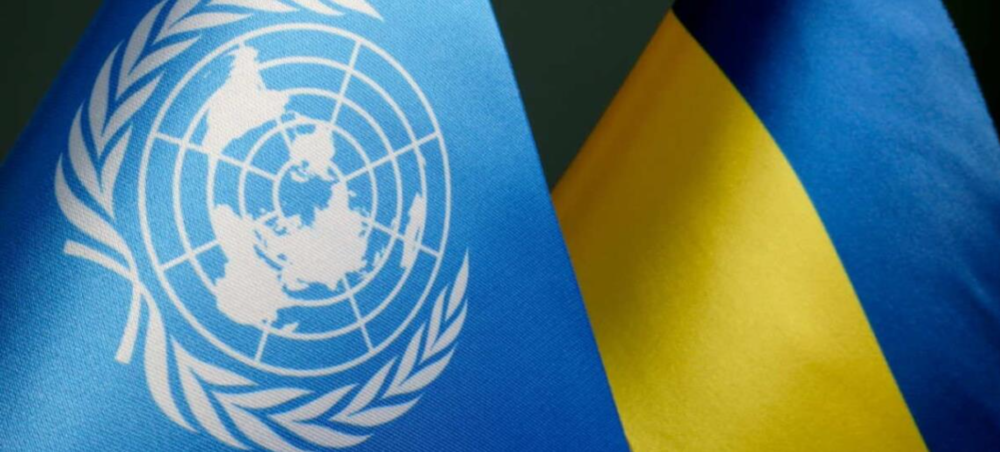